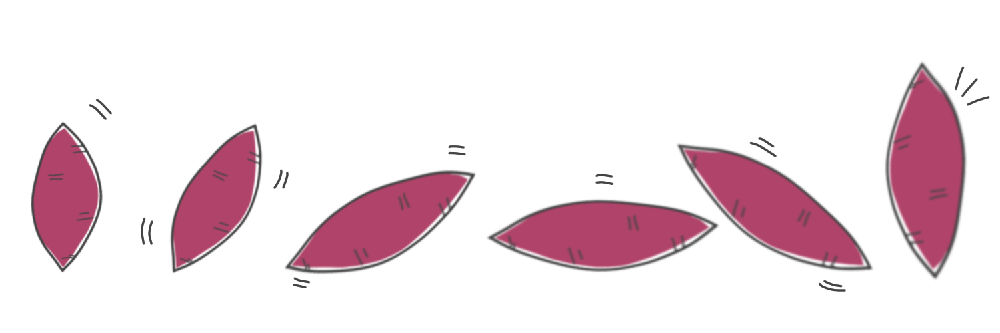

-Result-
あなたにぴったりのさつまいもは．．．
”シルクスイート”
近年の品種改良によって生まれたさつまいも界の新星、繊維が少なく、まるでシルクのような舌ざわり。
このさつまいもにマッチングしたあなたは焼き芋愛があり、なかでもしっとりと滑らかな舌触りが好みでしょう！シルクスイートの焼き芋はとくに冷凍すると、滑らかで濃厚なさつまいもアイスのように格段においしくなります。ぜひお試しあれ！！
近年の品種改良によって生まれたさつまいも界の新星、繊維が少なく、まるでシルクのような舌ざわり。
このさつまいもにマッチングしたあなたは焼き芋愛があり、なかでもしっとりと滑らかな舌触りが好みでしょう！シルクスイートの焼き芋はとくに冷凍すると、滑らかで濃厚なさつまいもアイスのように格段においしくなります。ぜひお試しあれ！！